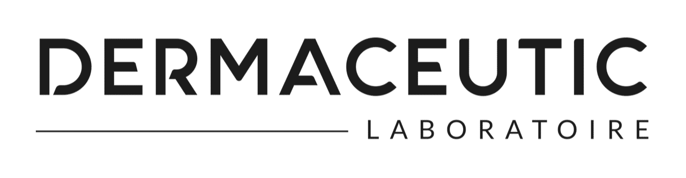
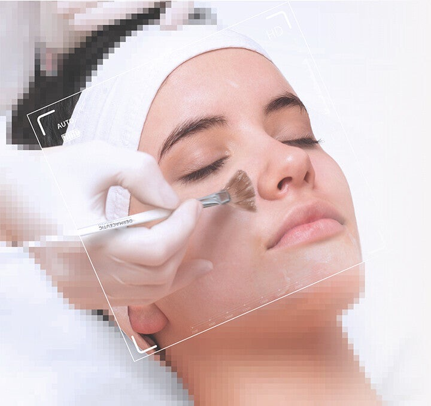
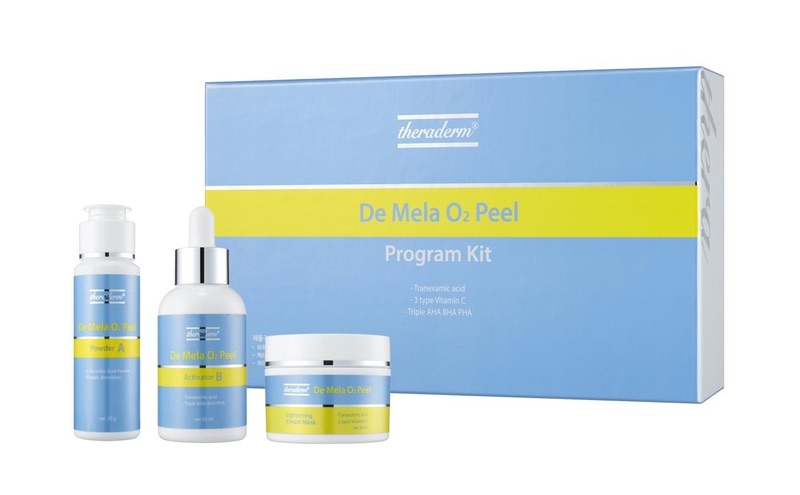

Huidverbetering & verjonging
Medische peelings
Een medische peeling laat het bovenste, 'dode' huidlaagje versneld afschilferen. Zo ontstaat een vernieuwde, gladdere huid. Al na één behandeling merk je verschil.


Wat is het
Een vernieuwde huid
Een peeling kan zorgen voor een minimale tot zware afschilfering. Dat hangt af van de sterkte en diepte van de peeling, de voorbereiding en de conditie van de huid.
Er zijn peelings voor (acne)littekens, hyperpigmentatie, melasma, een gevoelige huid, rosacea en fijne lijntjes. Welke peeling we kiezen hangt af van je huid en de gewenste hersteltijd.

Onze peelings
Van feestpeeling tot TCA
De Mask Peel ('feestpeeling', 15 minuten) geeft direct een glow zonder vervelling. De Milk Peel en Crystal Peel (30 minuten) werken op fijne lijntjes, een doffe teint, pigment en milde acne.
De Cosmo Peel met TCA (45 minuten, 3–7 dagen herstel) verbetert lijntjes, rimpels en acnelittekens. De Mela Lightening (60 minuten) pakt melasma aan en kan ook in de zomer.

Geschikt bij
Waar een peeling helpt
Verloop
Na de peeling
- Voorbereiden
Voor de sterkere peelings bereid je de huid vooraf voor met de juiste producten. Dat leggen we uit tijdens het consult.
- Mask Peel
Geen zichtbaar herstel: je kunt dezelfde dag nog naar een feestje.
- Milk & Crystal
Minimale downtime.
- Cosmo Peel
3 tot 7 dagen herstel, met tijdelijk roodheid, zwelling of schilfering.
Tarieven
Wat kost een peeling?
Alle tarieven zijn per behandeling. Het intakegesprek van 30 minuten is gratis.
Peelings zijn ook te combineren met microneedling in onze combinatiebehandelingen.
Alle tarievenVeelgestelde vragen
Goed om te weten
Welke peeling past bij mij?
Dat hangt af van je huidaandoening, huidconditie en de gewenste hersteltijd. Daarom maken we elke behandeling op maat; tijdens de gratis intake bespreken we de mogelijkheden.
Kan ik in de zomer een peeling laten doen?
Sommige wel. De Mela Lightening en de organische peelings van Theraderm kunnen ook in zonnige periodes worden uitgevoerd.
Moet ik mijn huid voorbereiden?
Voor onder andere de Milk Peel en Cosmo Peel bereid je de huid vooraf voor met de juiste producten. Dat leggen we uit tijdens het consult.
Benieuwd wat een peeling voor jou doet?
Plan een gratis intakegesprek van 30 minuten. We bekijken je huid en maken samen een behandelplan.
Ook interessant